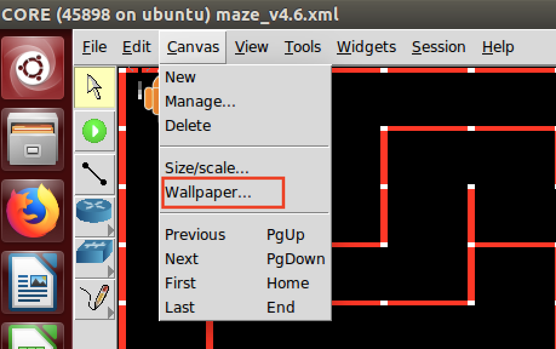

Tutorial¶
To design a new algorithm for running a micromouse, you need to write your own strategy inheriting from class Strategy and overrides the functions:
- checkFinished()
- go().
Create a python file and write a function to create a micromouse to run.
Example¶
The example shows how DFS algorithm is applied using the framework to traverse the maze.
For a basic DFS algorithm for only one mouse running in the maze, you can write a Strategy called StrategyDFS which inherits the Strategy class and overrides the function checkFinished() and function go(). The function checkFinished() is called because the Task Loader repeatedly check whether the task applying the strategy has finished after calling function go(). The main structure of function run() of Task Loader is as follows:
def run():
while not strategy.checkFinished():
strategy.go()
Step 1: Write your own strategy inheriting from class Strategy and overrides the function checkFinished() and function go().
Let’s suppose we write a class inherits from Strategy as follows: (copied from strategy.py -> StrategyTestDFS)
class StrategyTestDFS(Strategy):
mouse = None # It is necessary to keep a mouse instance as a member variant of Strategy class
isVisited = [] # The isVisited is a two-dimensional array marking which cell has been visited by itself or other robots
path = [] # The path is a stack to track the path that mouse goes through
isBack = False # Use a flag to mark whether the mouse has gone back to the origin
network = None # The instance of NetworkInterface
def __init__(self, mouse): # Called when Micromouse add a task with this strategy and it passes instance of itself as the second argument
self.mouse = mouse
self.isVisited = [[0 for i in range(self.mouse.mazeMap.width)] for j in range(self.mouse.mazeMap.height)]
self.isVisited[self.mouse.x][self.mouse.y] = 1 # 1 marks that isVisited[x][y] has been visited
def checkFinished(self):
return self.isBack # The terminating condition is that isBack = 1
def go(self):
# Sequentially check four directions, go if there is no wall and has not been visited before
if not self.mouse.canGoLeft() and not self.isVisited[self.mouse.x-1][self.mouse.y]:
self.path.append([self.mouse.x, self.mouse.y])
self.isVisited[self.mouse.x-1][self.mouse.y] = 1
self.mouse.goLeft()
elif not self.mouse.canGoUp() and not self.isVisited[self.mouse.x][self.mouse.y-1]:
self.path.append([self.mouse.x, self.mouse.y])
self.isVisited[self.mouse.x][self.mouse.y-1] = 1
self.mouse.goUp()
elif not self.mouse.canGoRight() and not self.isVisited[self.mouse.x+1][self.mouse.y]:
self.path.append([self.mouse.x, self.mouse.y])
self.isVisited[self.mouse.x+1][self.mouse.y] = 1
self.mouse.goRight()
elif not self.mouse.canGoDown() and not self.isVisited[self.mouse.x][self.mouse.y+1]:
self.path.append([self.mouse.x, self.mouse.y])
self.isVisited[self.mouse.x][self.mouse.y+1] = 1
self.mouse.goDown()
else:
# When four directions are either wall or visited, go back one step by popping up path stack
if len(self.path) != 0:
x, y = self.path.pop()
if x < self.mouse.x:
self.mouse.goLeft()
elif x > self.mouse.x:
self.mouse.goRight()
elif y < self.mouse.y:
self.mouse.goUp()
elif y > self.mouse.y:
self.mouse.goDown()
else:
# The stack being empty means that mouse has gone back to the origin
self.isBack = True
sleep(0.5) # Delay for better demonstration
Write a function to create a micromouse to run.
from map import Map;
from mouse import Micromouse;
from strategy import StrategyTestDFS;
def myMouse():
mazeMap = Map(16, 16) # Specify the size of maze map: height and width.
micromouse = Micromouse(mazeMap) # Create a micromouse with the empty map
micromouse.setInitPoint(0, 0) # Tell the micromouse the origin coordinate
micromouse.addTask(StrategyTestDFS(micromouse)) # Use the created Strategy with this micromouse instance to add a Task
micromouse.run() # The TaskLoader will run the tasks you have added
Demonstrations¶
demo_core.py is used for running the DFS in CORE.
demo_ev3.py is used for running the DFS in EV3.
Run in CORE¶
First make sure that CORE has been installed. If you have not installed CORE, follow CORE Tutorial to install.
Download the Micromouse framework from Micrmouse Github Page. DO NOT only download the framework folder because the maze file examples are not included.
$ cd /path/you/downloaded/Micromouse
WARNING: DO NOT make your path of Micromouse framework too long and sometimes it does not work if there are special characters like ‘_’, ‘-‘, ‘/’ in the full path.
Configure the CORE environment for running core_demo.py
$ sudo ./setCORE.sh
If you encounter any problems running the above script, you may need to manually configure the environment for CORE.
Open CORE to demonstrate:
$ core-gui
Then open maze.xml, click the Start session button.
Visualize the exploring results:
Install python3-tk:
$ sudo apt-get install python3-tk
Open the display.py before starting a session:
$ python3 display.py
Use Ctrl + C to terminate.
Run in EV3¶
$ nano controller.py
Uncomment this line: from ev3dev.ev3 import *
$ nano demo.py
Change the size to match your maze:
mazeMap = Map(8, 8)
Specify the direction it faces at the beginning, UP is default:
micromouse.setInitDirection("UP")
Set the initial coordinate x, y:
micromouse.setInitPoint(0, 0)
Add the task with written Strategy instance:
micromouse.addTask(StrategyTestMultiDFS(micromouse))
Download the framework folder into the EV3 robot.
Press the center button of EV3 to boot and wait until the main menu appears. Choose File browser->demo.py. Click the center button to start. The light may turn orange if everything is good. It is not necessarily that two mice start at exactly the same time.
Manually Configure CORE¶
If setCORE.sh is not working, follow these steps to manually configure CORE.
Let the MDR node runs Micromouse automatically by adding a customized service.
$ sudo nano /etc/core/core.conf
Uncomment the line of custom_services_dir and set:
custom_services_dir = /path/you/downloaded/Micromouse
listenaddr = 0.0.0.0
Save and Exit.
$ cd /path/you/downloaded/Micromouse
$ nano ./preload.py
Modify this line:
_startup = ('/path/you/downloaded/Micromouse/backservice.sh',)
Save and Exit.
$ nano ./backservice.sh
Modify this line:
export ServiceHOME=/path/you/downloaded/Micromouse/framework
Save and Exit.
$ nano ~/.core/nodes.conf
Modify line 4: Add a MyService.
{ mdr mdr.gif mdr.gif {zebra OSPFv3MDR vtysh IPForward MyService} netns {built-in type for wireless routers} }
Save and Exit.
$ chmod 755 __init__.py preload.py backservice.sh
To check whether the Micromouse service has been added, restart core-daemon and open CORE:
$ sudo service core-daemon restart
$ core-gui
Add a MDR node into the canvas and right-click the node, click Serivce. Now you can see MyService is appearing in the column of Utility and it has been enabled. Click the tool icon on the right of MyService and click the Startup/shutdown tab, you can see the complete path of backservice.sh is shown in the middle Startup Commands list. That marks the correct configurations of CORE.
$ nano ./maze.xml
Change paths of 4 icons:
name="icon" value="/path/you/downloaded/Micromouse/icons/robot***.png"
Change path of wallpaper:
wallpaper {/path/you/downloaded/Micromouse/mazes/2012japan-ef.png}
Save and Exit.
$ nano framework/core_demo.py
Change path of maze file:
mazeMap.readFromFile('/path/you/downloaded/Micromouse/mazes/2012japan-ef.txt')
Open CORE to demonstrate:
$ core-gui
Then open maze.xml, click the Start session button.
Customized Platforms¶
If you are going to demonstrate in CORE or EV3, you can directly utilize the COREController and EV3MotorController, EV3SensorController in controller.py and skip this step. The mentioned functions are atomic procedures for Task Layer to call so that when writting a strategy, you can just call senseWalls(), goLeft(), goRight(), goUp() or goDown() in Micromouse class without considering the direction it faces and writing code of manipulating the hardware.
If you have your own hardware platform or emulation software, write your own MotorController inheriting from class MotorController and SensorController for your hardware - robot. You need to override the functions in MotorController:
- turnLeft()
- turnRight()
- turnAround()
- goStraight()
and functions in SensorController:
- senseLeft()
- senseRight()
- senseFront()
- senseBack()
Debugging in CORE emulator¶
Replace your map¶
In core_demo.py,
mazeMap = Map(16, 16)
creates a new empty map with height=16 and width=16.
mazeMap.readFromFile('/home/zhiwei/Micromouse/mazes/2012japan-ef.txt')
loads a map from a text file into micromouse’s memory. You may replace the text file with your customized map. The folder mazes also includes a set of maps both in text format and a png file which is used for visualization in CORE.
{kind=link}
Communications Guide¶
The communications between micromouses are based on Socket Programming. The network module gives the high level APIs for micromouse to broadcast or receive packets. To use this module, you need to create an instance of NetworkInterface, and initiate the socket:
from network import NetworkInterface
self.network = NetworkInterface()
self.network.initSocket()
If you need to enable the socket to receive data, you also need to start the receiving thread to prevent blocking the main thread.
self.network.startReceiveThread()
If you need to send information in string, you can use network.sendStringData(your_data). For simplicity, you can use a dictionary which is the built-in data structure of Python. The framework will serialize the dictionary to a string to send. For example, usually the micromouses need to broadcast their current locations:
myLocation = {'x': self.mouse.x, 'y': self.mouse.y}
self.network.sendStringData(myLocation)
If you need to receive information from your neighboring micromouses, you can use network.retrieveData().
receivedLocation = self.network.retrieveData()
print((receivedLocation['x'], receivedLocation['y']))
The broadcasting packets are not only sent to the your neighboring micromouse, but also sent to yourself. To distinguish who sends the packet, you can put the unique entity, e.g., IP address of the micromouse, into the packet.
myLocation = {'id': self.network.myIPAddr, x': self.mouse.x, 'y': self.mouse.y}
self.network.sendStringData(myLocation)
receivedLocation = self.network.retrieveData()
if receivedLocation['id'] != self.network.myIPAddr:
print('This packet is not from myself!')